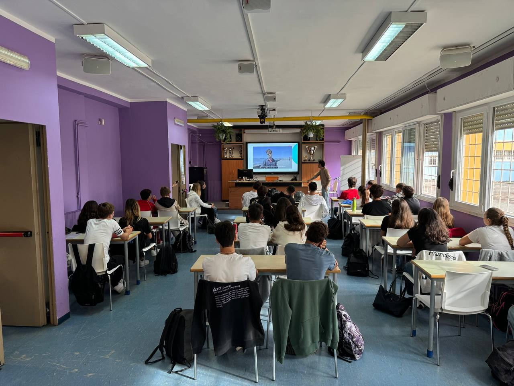
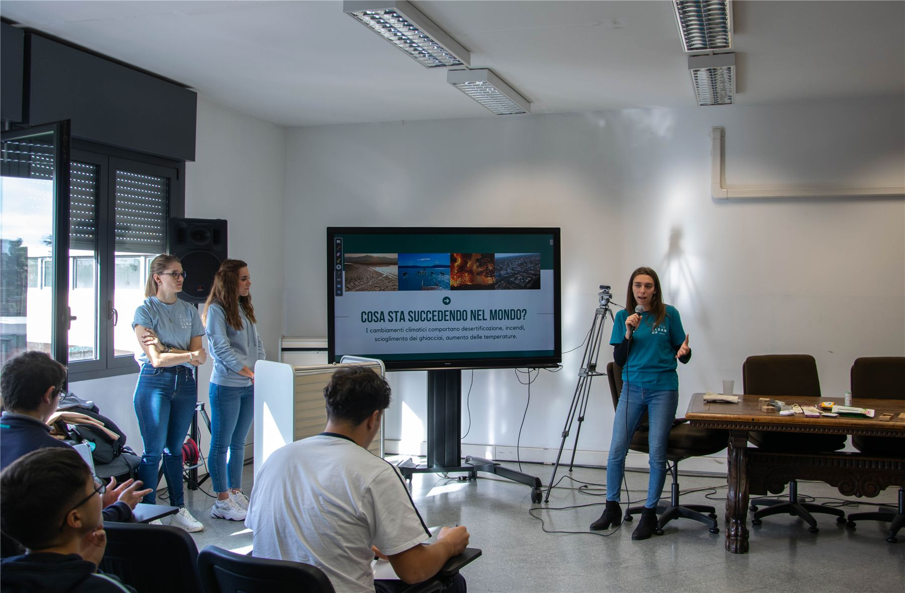
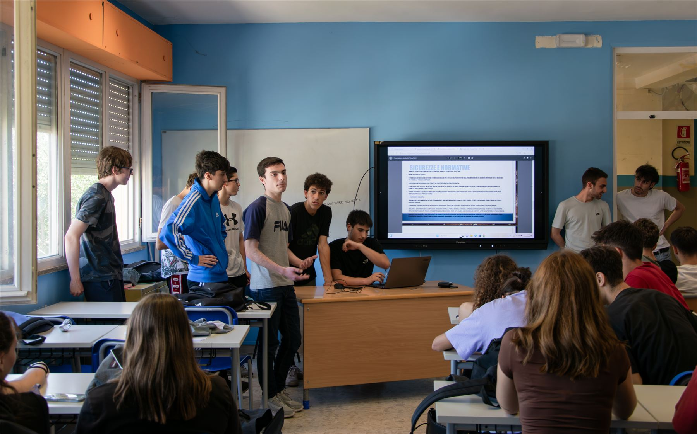

Workshop e PCTO
Imparare facendo,
dal banco alla spiaggia.
Lezioni divulgative, laboratori pratici e percorsi PCTO su ambiente, mare ed ecologia. Per scuole, famiglie, aziende e curiosi di ogni età: perché il cambiamento parte da ciò che impariamo.

L'approccio
La teoria che diventa gesto
Crediamo che si impari davvero quando si fa. Per questo affianchiamo alle lezioni divulgative dei laboratori pratici: dalla raccolta differenziata fatta bene al riuso creativo, fino al riconoscimento di flora e fauna del litorale.
Ogni incontro è modellato sul pubblico: linguaggio, durata e attività cambiano per bambini, ragazzi o adulti.
I formati
Come possiamo incontrarci
Lezioni divulgative
Incontri frontali e interattivi su mare, rifiuti, clima ed economia circolare.
Workshop pratici
Laboratori hands-on: riuso, upcycling, citizen science e monitoraggio ambientale.
Talk & eventi
Interventi per festival, aziende e associazioni che vogliono parlare di sostenibilità.
Attività per famiglie
Giochi e attività all'aperto per scoprire l'ambiente insieme, grandi e piccoli.
I temi
Di cosa parliamo
- Tutela del mare e dell'ambiente
- Rifiuti, riciclo e riuso
- Natura e biodiversità
- Crisi climatica
- Sostenibilità nella vita di tutti i giorni
- Cittadinanza attiva

Scuole e PCTO
L'ecologia entra in classe
Progettiamo percorsi per le scuole, dalle elementari alle superiori. Uniamo momenti in aula a uscite sul campo — perché la sostenibilità si capisce meglio con la sabbia tra le mani.
I progetti possono valere come PCTO (Percorsi per le Competenze Trasversali e l'Orientamento) e si integrano con l'educazione civica.

Come funziona il PCTO
Dall'idea al certificato
Progettazione condivisa
Incontriamo i referenti scolastici e costruiamo insieme obiettivi, ore e attività.
Formazione
Gli studenti acquisiscono nozioni e strumenti su ambiente, sicurezza e citizen science.
Azione sul campo
Clean up, raccolta dati e attività di sensibilizzazione: competenze messe in pratica.
Restituzione
Gli studenti rielaborano l'esperienza e ricevono la certificazione delle ore svolte.
Domande frequenti
Per i docenti
I percorsi sono validi come PCTO?
Sì. Progettiamo esperienze strutturate e certificabili, con monte ore concordato e documentazione per la scuola.
Per quali fasce d'età sono adatti?
Lavoriamo con le scuole dalle elementari in poi, adattando linguaggio e attività all'età degli studenti: primarie, medie e superiori.
Le attività si svolgono a scuola o all'aperto?
Entrambe: alterniamo moduli in aula a uscite sul litorale, in base al progetto e alla stagione.
Come si attiva una collaborazione?
Scrivici dalla pagina contatti: fisseremo un primo incontro per co-progettare il percorso.
Porta OCU dove sei tu.
Scuola, azienda, festival o gruppo di amici: co-progettiamo insieme l'incontro o il percorso su misura per voi.
Scrivici